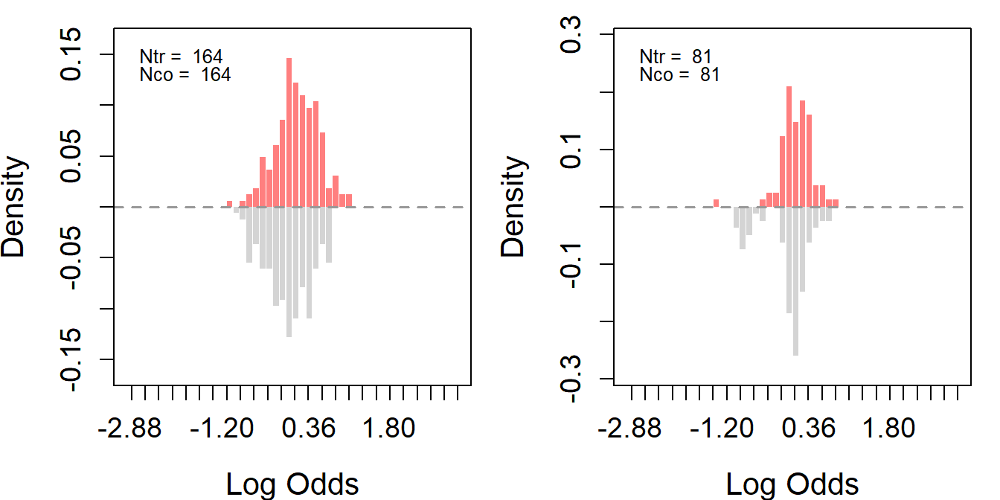
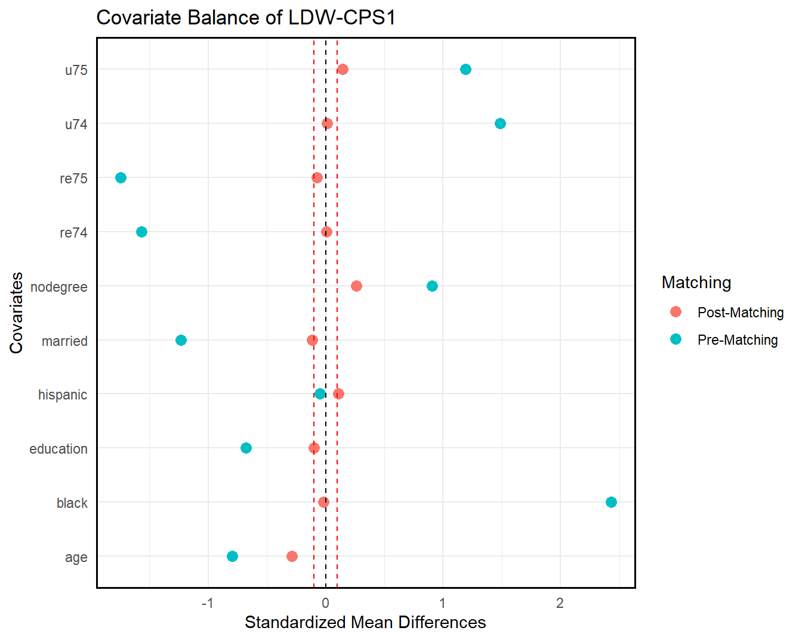
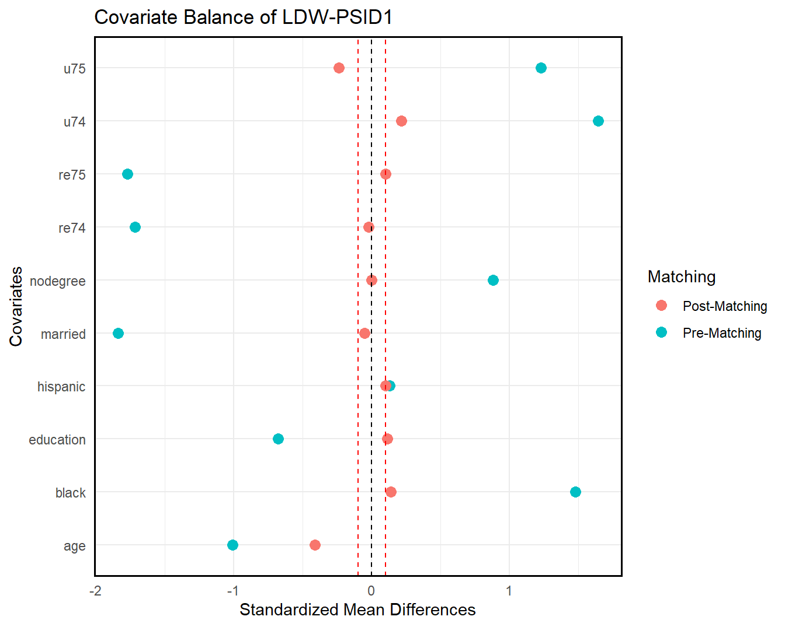
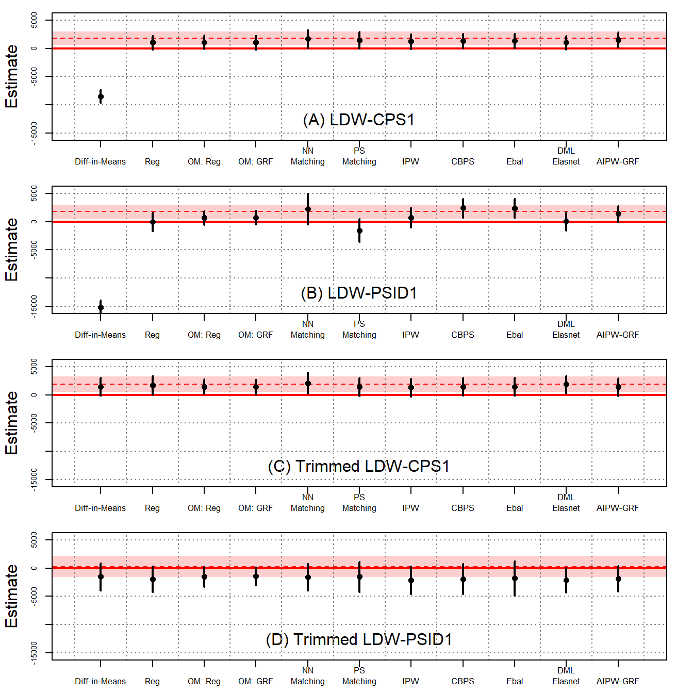
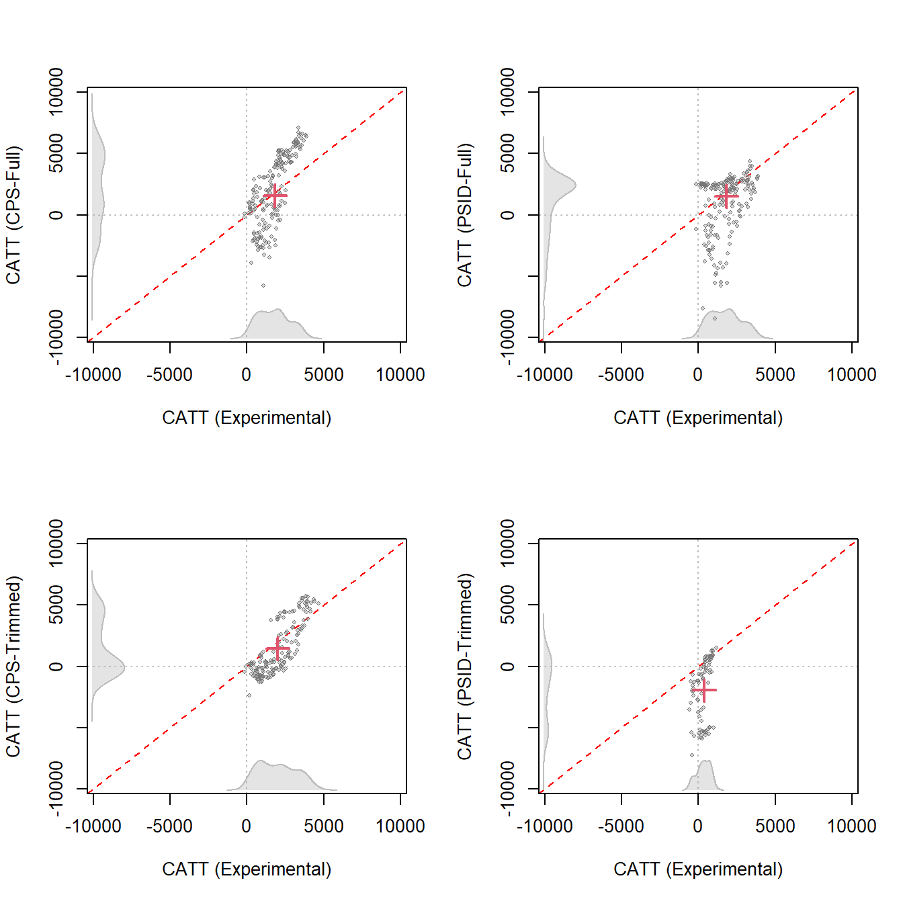
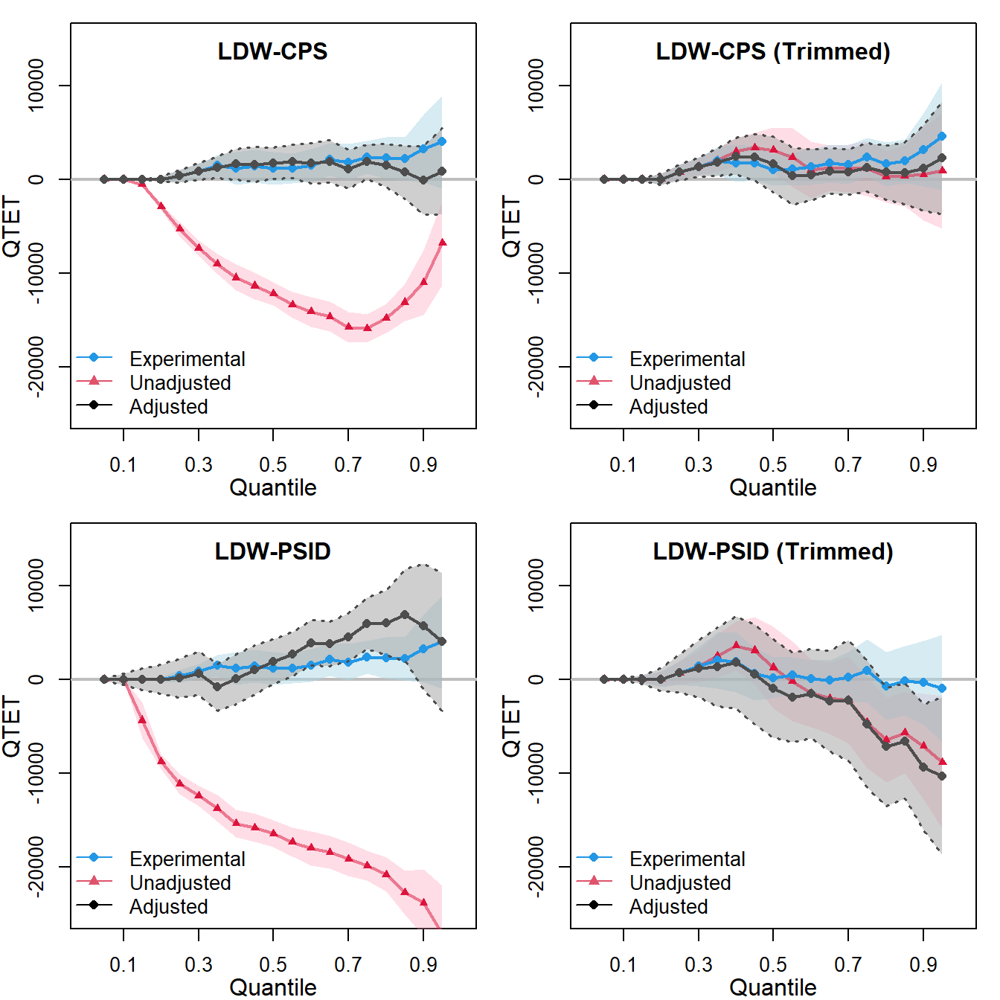
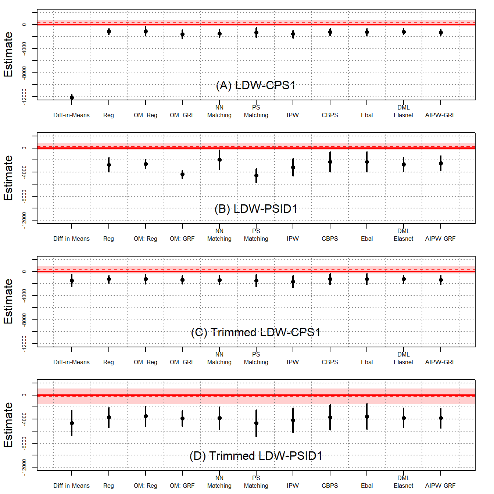

Code
# source the functions provided in part 1
source("https://github.com/xuyiqing/lalonde/blob/main/tutorial/functions.R?raw=TRUE")LaLonde (1986) assessed the impact of the National Supported Work Demonstration (NSW) program on both female and male participants, with females drawn from the Aid to Families with Dependent Children (AFDC) program and males from three other target groups: ex-drug addicts, ex-criminal offenders, and high-school dropouts. LaLonde used two primary data sources:
Dehejia and Wahba (1999) subsampled 62% of LaLonde’s original dataset focusing on 1974 earnings and unemployment status of male participants. Since the construction relies solely on pretreatment information like month of assignment and employment history to ensure treatment assignment remains orthogonal to all pretreatment variables, Dehejia and Wahba argue the refined dataset, LaLonde-Dehejia-Wahba (LDW) data, is a valid experimental sample.
Built upon LDW data, our analysis examines three samples: (1) LDW-Experimental, with 185 treated and 280 control participants from the experimental data; (2) LDW-CPS1, featuring the same treated individuals alongside 15,992 controls from CPS-SSA-1; and (3) LDW-PSID1, including the same treated participants and 2,490 controls from PSID-1. Then, we apply the same set of statistical tools to analyze the original male sample from LaLonde (1986) in section 4 as an additional demonstration.
# source the functions provided in part 1
source("https://github.com/xuyiqing/lalonde/blob/main/tutorial/functions.R?raw=TRUE")load("data/lalonde.RData")
ldw_co$treat <- 1
ldw_cps.plus <- rbind.data.frame(ldw_cps, ldw_co)
ldw_psid.plus <- rbind.data.frame(ldw_psid, ldw_co)
# define variables
Y <- "re78"
treat <- "treat"
covar <- c("age", "education", "black", "hispanic", "married",
"nodegree", "re74", "re75", "u74", "u75")To identify the average causal effect under unconfoundedness, we need to ensure that we can estimate the average effect at every value for the covariates. Thus, we require overlaps between the treated and control units. Using the assess_overlap() function, we can assess overlaps in propensity scores. To test the overlap assumption, we plot histograms using the log-odds of propensity scores, i.e., \(\log(\frac{\hat{e}}{1-\hat{e}})\).
Ideally, for a well-balanced experimental design, the distributions of the treated (red) and the control (gray) groups should overlap.
ldw_ps <- assess_overlap(data = ldw, treat = treat, cov = covar)
#> -1.2254 0.7533904
As expected, LDW-Experimental shows a almost perfect overlap. However, both observational samples show very poor overlaps. Most notably, the propensity scores of many treated units do not lie within the support of the controls’ propensity scores, and a substantial proportion of the control units possess extremely low log-odds.
Based on LDW-CPS1 and LDW-PSID1, we further construct two trimmed samples to improve overlap. Trimming involves two steps.
First, we merge the experimental controls from LDW-Experimental into LDW-CPS1 (or LDW-PSID1) to enhance the control group with more units. Then, we can estimate each unit’s propensity included in the experiment using GRF. The purpose of trimming is to remove units that are too dissimilar from the other group to ensure a better balance between the treated and control groups. We can use trim() to trim the data.
# re-estimate each unit’s propensity by merged data
ldw_cps_ps <- assess_overlap(data = ldw_cps.plus, treat = treat, cov = covar)
#> -16.1181 3.542706
ldw_psid_ps <- assess_overlap(data = ldw_psid.plus, treat = treat, cov = covar)
#> -16.1181 7.102692
trim <- function(data, ps = "ps_assoverlap", threshold = 0.9) {
sub <- data[which(data[, ps] < threshold), ]
return(sub)
}
ldw_cps_trim <- trim(ldw_cps_ps, threshold = 0.9)
ldw_psid_trim <- trim(ldw_psid_ps, threshold = 0.8)Second, using the trimmed data and the same set of covariates, we reestimate propensity scores with GRF; this time, experimental controls are excluded.
# cps data
# excluding the experimental controls
ldw_cps_trim_match <- subset(ldw_cps_trim, sample %in% c(1,3) & ps_assoverlap)
# re-estimate propensity scores and employ 1:1 matching
ldw_cps_trim_match <- psmatch(data = ldw_cps_trim_match, Y = "re78", treat = "treat", cov = covar)
# psid data
# excluding the experimental controls
ldw_psid_trim_match <- subset(ldw_psid_trim, sample %in% c(1,4) & ps_assoverlap)
# re-estimate propensity scores and employ 1:1 matching
ldw_psid_trim_match <- psmatch(data = ldw_psid_trim_match, Y = "re78", treat = "treat", cov = covar)We then employ a 1:1 matching based on the reestimated propensity scores to further trim the nonexperimental controls.
# We conduct this procedure to trim all samples simultaneously to improve overlap in the final samples.
#cps
ldw_trim_cps <- subset(ldw_cps_trim, sample %in% c(1,2) & ps_assoverlap <= 0.9)
ldw_trim_cps$treat[which(ldw_trim_cps$sample == 2)] <- 0
#psid
ldw_trim_psid <- subset(ldw_psid_trim, sample %in% c(1,2) & ps_assoverlap <= 0.8)
ldw_trim_psid$treat[which(ldw_trim_psid$sample == 2)] <- 0As shown in the following figures, overlap improves significantly in both samples post-trimming, though this comes with the cost of reduced sample sizes.

We can also check covariate balance directly by love.plot(). As shown in the following figures, covariate overlap improves significantly in both samples post-trimming (matching).
# cps data
love.plot(ldw_cps, ldw_cps_trim_match, treat = treat, covar = covar, title = "Covariate Balance of LDW-CPS1")
# psid data
love.plot(ldw_psid, ldw_psid_trim_match, treat = treat, covar = covar, title = "Covariate Balance of LDW-PSID1")

Next, we estimate the ATT using both the original LDW observational samples and the newly constructed trimmed samples. We apply a variety of estimators, including simple difference-in-means, regression, the OaxacaBlinderestimator, GRF as an outcome model, 1: 5 nearest neighbor matching with bias correction, IPW with propensity scores estimated by GRF, covariate balancing propensity score (CBPS), entropy balancing, double/debiased matching learning using elastic net, and AIPW implemented via GRF. All estimators use the same set of ten covariates as before.
To achieve such a comprehensive analysis of the ATT, we can use the estimate_all() and plot_coef() function.
load("data/trimmed.RData")
# experimental
out1 <- estimate_all(data = ldw, Y = "re78", treat = "treat", cov = covar)
out2 <- estimate_all(ldw_trim_cps, "re78", "treat", covar)
out3 <- estimate_all(ldw_trim_psid, "re78", "treat", covar)
# nonexperimental
out4 <- estimate_all(ldw_cps, "re78", "treat", covar)
out5 <- estimate_all(ldw_psid, "re78", "treat", covar)
out6 <- estimate_all(ldw_cps_trim, "re78", "treat", covar)
out7 <- estimate_all(ldw_psid_trim, "re78", "treat", covar)par(mfrow = c(4,1))
band <- out1[1, 3:4]
est <- out1[1, 1]
plot_coef(out4, band = band, line = est, ylim = c(-15500, 5500), main = "(A) LDW-CPS1")
band <- out1[1, 3:4]
est <- out1[1, 1]
plot_coef(out5, band = band, line = est, ylim = c(-15500, 5500), main = "(B) LDW-PSID1")
band <- out2[1, 3:4]
est <- out2[1, 1]
plot_coef(out6, band = band, line = est, ylim = c(-15500, 5500), main = "(C) Trimmed LDW-CPS1")
band <- out3[1, 3:4]
est <- out3[1, 1]
plot_coef(out7, band = band, line = est, ylim = c(-15500, 5500), main = "(D) Trimmed LDW-PSID1")
The above figures show the ATT estimates and their 95% confidence intervals using four different samples: LDW-CPS1, LDW-PSID1, Trimmed LDW-CPS1, and Trimmed LDW-PSID1.
As shown in Figure 3(A), when using LDW-CPS1, all estimators, except difference in-means, produce positive estimates, although there are noticeable variations among them. Nearest neighbor matching outperforms other estimators, aligning closely with the experimental benchmark of $1,794. Notably, CBPS, entropy balancing, and AIPW-GRF also produce results close to the benchmark. Despite numerical differences, these estimates, except for difference-in-means, cannot be statistically distinguished from one another. Figure 3(B) shows that estimates based on LDW-PSID1 exhibit greater variations. Setting aside the difference-in-means, the estimates span from $4 to $2,420. Among them, the AIPW-GRF estimator produces an estimate closest to the experimental benchmark.
Figure 3(C) and (D) show that by using trimmed data with improved overlap, estimates produced by various estimators are substantially more stable.
The ATT results are presented in the table below:
# print the result
a <- list(out4, out5, out6, out7)
n <- nrow(out1)
sav <- matrix("", n+1, length(a)*3-1)
for (j in 1:length(a)) {
out <- a[[j]]
n <- nrow(out)
for (i in 2:(nrow(out)+1)) {
sav[i, j*3-2] <- sprintf("%.2f", out[i-1, 1])
sav[i, j*3-1] <- paste0("(", sprintf("%.2f", out[i-1, 2]), ")")
}
}
sav[1, 1] <- sprintf("%.2f", out1[1, 1])
sav[1, 2] <- paste0("(", sprintf("%.2f", out1[1, 2]), ")")
sav[1, 4] <- sprintf("%.2f", out1[1, 1])
sav[1, 5] <- paste0("(", sprintf("%.2f", out1[1, 2]), ")")
sav[1, 7] <- sprintf("%.2f", out2[1, 1])
sav[1, 8] <- paste0("(", sprintf("%.2f", out2[1, 2]), ")")
sav[1, 10] <- sprintf("%.2f", out3[1, 1])
sav[1, 11] <- paste0("(", sprintf("%.2f", out3[1, 2]), ")")
colnames(sav) <- c("LDW-CPS1", "", "", "LDW-PSID1", "", "", "LDW-CPS1 (PS Trimmed) ", "", "", "LDW-PSID1 (PS Trimmed)", "")
rownames(sav) <- c("Experimental Benchmark", "Difference-in-Means", "Regression", " Oaxaca Blinder", "GRF", "NN Matching", "PS Matching", "IPW", "CBPS", "Entropy Balancing", "DML-ElasticNet", "AIPW-GRF")
sav %>% knitr::kable(booktabs=TRUE, caption = " Table B1 in the Supplementary Materials (SM)")| LDW-CPS1 | LDW-PSID1 | LDW-CPS1 (PS Trimmed) | LDW-PSID1 (PS Trimmed) | ||||||||
|---|---|---|---|---|---|---|---|---|---|---|---|
| Experimental Benchmark | 1794.34 | (670.82) | 1794.34 | (670.82) | 1911.04 | (737.71) | 306.29 | (985.98) | |||
| Difference-in-Means | -8497.52 | (581.92) | -15204.78 | (655.91) | 1483.82 | (824.44) | -1505.24 | (1219.89) | |||
| Regression | 1066.38 | (626.85) | 4.16 | (854.15) | 1751.16 | (824.20) | -1939.59 | (1154.45) | |||
| Oaxaca Blinder | 1133.28 | (624.26) | 687.82 | (635.26) | 1507.48 | (672.08) | -1511.20 | (900.46) | |||
| GRF | 1078.83 | (629.88) | 766.29 | (635.04) | 1442.19 | (665.76) | -1401.32 | (792.83) | |||
| NN Matching | 1729.12 | (815.38) | 2255.47 | (1403.83) | 2137.90 | (946.11) | -1564.93 | (1209.89) | |||
| PS Matching | 1360.89 | (748.71) | 2275.83 | (762.42) | 1341.73 | (802.29) | -2746.63 | (1275.32) | |||
| IPW | 1236.84 | (687.14) | 739.34 | (893.32) | 1343.01 | (826.44) | -2117.63 | (1270.02) | |||
| CBPS | 1408.01 | (654.96) | 2437.70 | (877.80) | 1471.35 | (813.29) | -1885.28 | (1369.64) | |||
| Entropy Balancing | 1406.27 | (654.93) | 2420.49 | (876.85) | 1472.12 | (812.92) | -1776.73 | (1551.89) | |||
| DML-ElasticNet | 1068.62 | (627.81) | 91.01 | (861.30) | 1912.25 | (818.40) | -2112.57 | (1125.17) | |||
| AIPW-GRF | 1571.17 | (703.86) | 1422.82 | (772.78) | 1426.58 | (815.99) | -1830.25 | (1169.91) |
Columns 1 and 2 report the estimates from LDW-CPS1 and LDW-PSID1, respectively, while columns 3 and 4 report the estimates from the trimmed samples with improved overlap. Robust standard errors are in the parentheses. Improved overlap in trimmed samples generally leads to estimates with higher consistency with the benchmark. The trimmed samples often show increased standard errors, which is expected as trimming reduces the sample size, thus increasing variance.
As shown in column 1, when using LDW-CPS1, all estimators, except difference-in-means, produce estimates exceeding $1,000, although there are noticeable variations among them. Nearest neighbor matching outperforms other estimators, aligning closely with the experimental benchmark of $1,794. Notably, propensity score matching, entropy balancing, and AIPW-GRF also produce results close to the benchmark. The standard errors of these estimates are large. As a result, despite numerical differences, these estimates, except for difference-in-means, cannot be statistically distinguished from one another. Column 2 shows that estimates based on LDW-PSID1 exhibit greater variations.
These findings suggest that while improved overlap based on observed covariates can reduce model dependency and estimate variability across different estimators, it does not guarantee consistency without validating unconfoundedness.
Exploring causal estimates for alternative estimands, such as heterogeneous treatment effects and quantile treatment effects, can help assess unconfoundedness.
CATT can reveal how the treatment effect varies across different subgroups defined by covariates. Using both the original LDW data and the trimmed versions, we estimate the CATT using a causal forest through AIPW-GRF. We can use the wrapper function catt() to estimate CATT.
# estimate catt
catt.ldw <- catt(ldw, Y, treat, covar)
catt.cps <- catt(ldw_cps, Y, treat, covar)
catt.psid <- catt(ldw_psid, Y, treat, covar)
catt.cps.trim <- catt(ldw_cps_trim, Y, treat, covar)
catt.psid.trim <- catt(ldw_psid_trim, Y, treat, covar)
# trimmed experimental data
catt.ldw.cps <- catt(ldw_trim_cps, Y, treat, covar)
catt.ldw.psid <- catt(ldw_trim_psid, Y, treat, covar)Then, we can use plot_catt() to visualize the result. In the following figures, we plot the estimated CATT from observational data at the covariate values of each treated unit against their corresponding experimental benchmarks. The gray dot represents a pair of CATT estimates, while the red cross depicts the pair of estimated ATTs.
par(mfrow = c(2,2))
# plot catt - "CATT (Experimental)" and "CATT (CPS-Full)"
catt1 <- catt.ldw$catt
att1 <- catt.ldw$att[1]
catt2 <- catt.cps$catt
att2 <- catt.cps$att[1]
plot_catt(catt1, catt2, att1, att2, "CATT (Experimental)", "CATT (CPS-Full)",
main = "", c(-8000, 8000))
# plot catt - "CATT (Experimental)" and "CATT (PSID-Full)"
catt1 <- catt.ldw$catt
att1 <- catt.ldw$att[1]
catt2 <- catt.psid$catt
att2 <- catt.psid$att[1]
plot_catt(catt1, catt2, att1, att2, "CATT (Experimental)", "CATT (PSID-Full)",
main = "", c(-8000, 8000))
# plot catt - "CATT (Experimental)" and "CATT (CPS-Trimmed)"
catt1 <- catt.ldw.cps$catt
att1 <- catt.ldw.cps$att[1]
catt2 <- catt.cps.trim$catt
att2 <- catt.cps.trim$att[1]
plot_catt(catt1, catt2, att1, att2, "CATT (Experimental)", "CATT (CPS-Trimmed)",
main = "", c(-8000, 8000))
# plot catt - "CATT (Experimental)" and "CATT (PSID-Trimmed)"
catt1 <- catt.ldw.psid$catt
att1 <- catt.ldw.psid$att[1]
catt2 <- catt.psid.trim$catt
att2 <- catt.psid.trim$att[1]
plot_catt(catt1, catt2, att1, att2, "CATT (Experimental)", "CATT (PSID-Trimmed)",
main = "", c(-8000, 8000))
Although the AIPW estimator can produce ATT estimates closely aligned with the experimental benchmark using LDW data, its performance for revealing the true CATT is considerably worse. Specifically, with LDW-CPS1, CATT estimates span from $-5,456.1 to $6,997.1, contrasting with the CATT estimated from experimental data which ranges from $-345.3 to $4,148.5. It overestimates CATT that exceeds the ATT and underestimates CATT that falls below the ATT. Employing LDW-PSID generates CATT estimates ranging from $-8131.2 to $4381.0. With trimmed LDW-CPS, the CATT estimates align more closely with those from the experimental data. However, using trimmed LDW-PSID, the majority of CATT estimates are negative, suggesting significant biases.
QTET is less sensitive to outliers and can uncover the heterogeneity in treatment effects that may be obscured by average treatment effect estimates. Our calculation of the QTET uses the propensity score re-weighting approach proposed by Firpo (2007).
To proceed, we can use the wrapper function qte().
# estimate qte (some of the following lines are not run due to computational limitation)
## experimental
qte.ldw <- est_qte(Y, treat, NULL, data = ldw)
qte.ldw.cps <- est_qte(Y, treat, NULL, data = ldw_trim_cps)
qte.ldw.psid <- est_qte(Y, treat, NULL, data = ldw_trim_psid)
## non-experimental
#qte.ldw_cps <- est_qte(Y, treat, covar, data = ldw_cps) # adjusted
#qte.ldw_cps0 <- est_qte(Y, treat, NULL, data = ldw_cps) # unadjusted
qte.ldw_cps.trim <- est_qte(Y, treat, covar, data = ldw_cps_trim) # adjusted
qte.ldw_cps.trim0 <- est_qte(Y, treat, NULL, data = ldw_cps_trim) # unadjusted
#qte.ldw_psid <- est_qte(Y, treat, covar, data = ldw_psid) # adjusted
#qte.ldw_psid0 <- est_qte(Y, treat, NULL, data = ldw_psid) # unadjusted
qte.ldw_psid.trim <- est_qte(Y, treat, covar, data = ldw_psid_trim) # adjusted
qte.ldw_psid.trim0 <- est_qte(Y, treat, NULL, data = ldw_psid_trim) # unadjustedWe can use plot_qte() to plot the result and compare the treatment effects estimated both before and after trimming based on propensity scores.
For each dataset, there are three lines representing:
# plot qte
#load the data
load("data/qte_ldw.rds")
par(mfrow = c(2,2))
# CPS
plot_qte(qte.ldw_cps, qte.ldw_cps0, qte.ldw, main = "LDW-CPS", ylim = c(-25000, 15000))
legend("bottomleft", legend = c("Experimental", "Unadjusted", "Adjusted"), lty = 1, pch = c(16, 17, 16), col = c(4, 2, 1), bty = "n")
## CPS trimmed
plot_qte(qte.ldw_cps.trim, qte.ldw_cps.trim0, qte.ldw.cps, main = "LDW-CPS (Trimmed)", ylim = c(-25000, 15000))
legend("bottomleft", legend = c("Experimental", "Unadjusted", "Adjusted"),
lty = 1, pch = c(16, 17, 16), col = c(4, 2, 1), bty = "n")
# PSID
plot_qte(qte.ldw_psid, qte.ldw_psid0, qte.ldw, main = "LDW-PSID", ylim = c(-25000, 15000))
legend("bottomleft", legend = c("Experimental", "Unadjusted", "Adjusted"),
lty = 1, pch = c(16, 17, 16), col = c(4, 2, 1), bty = "n")
# PSID trimmed
plot_qte(qte.ldw_psid.trim, qte.ldw_psid.trim0, qte.ldw.psid, main = "LDW-PSID (Trimmed)", ylim = c(-25000, 15000))
legend("bottomleft", legend = c("Experimental", "Unadjusted", "Adjusted"),
lty = 1, pch = c(16, 17, 16), col = c(4, 2, 1), bty = "n")
These figures plot the QTET estimates using both the LDW experimental data and non-experimental data. The QTET estimates from either the original or trimmed LDW-CPS1 data align reasonably well with the true QTET, although they are often underpowered. In contrast, the QTET of the original or trimmed LDW-PSID1 data displays notable biases compared to the experimental benchmark, which is close to zero.
This analysis suggests that, when considering alternative estimands such as CATT and QTET among the four observational samples, only trimmed LDW-CPS1 yields results consistently aligned closely with the experimental benchmark.
We conduct placebo analyses to further assess the plausibility of unconfoundedness. To do so, we select earnings in 1975 (re75) as the placebo outcome and remove both re75 and u75 from the set of conditioning variables. The trimmed samples are based on 1:1 matching of propensity scores estimated via GRF. (Two new trimmed samples are created without using re75 and u75.) Similarly, we can use estimate_all to calculate the ATT for the placebo analysis, conditional on the remaining covariates.
Y <- "re75"
treat <- "treat"
covar <- c("age", "education", "black", "hispanic", "married", "nodegree", "re74", "u74")
# experimental
out1 <- estimate_all(ldw, Y, "treat", covar)
out2 <- estimate_all(ldw_trim_cps_pl, Y, "treat", covar)
out3 <- estimate_all(ldw_trim_psid_pl, Y, "treat", covar)
# no experimental
out4 <- estimate_all(ldw_cps, Y, "treat", covar)
out5 <- estimate_all(ldw_psid, Y, "treat", covar)
out6 <- estimate_all(ldw_cps_trim_pl, Y, "treat", covar)
out7 <- estimate_all(ldw_psid_trim_pl, Y, "treat", covar)par(mfrow = c(4,1))
band <- out1[1, 3:4]
est <- out1[1, 1]
ylim <- c(-12000, 2000)
plot_coef(out4, band = band, line = est, ylim = ylim, main = "(A) LDW-CPS1")
band <- out1[1, 3:4]
est <- out1[1, 1]
plot_coef(out5, band = band, line = est, ylim = ylim, main = "(B) LDW-PSID1")
band <- out2[1, 3:4]
est <- out2[1, 1]
plot_coef(out6, band = band, line = est, ylim = ylim, main = "(C) Trimmed LDW-CPS1")
band <- out3[1, 3:4]
est <- out3[1, 1]
plot_coef(out7, band = band, line = est, ylim = ylim, main = "(D) Trimmed LDW-PSID1")
Figure 6 presents the findings. Not surprisingly, the experimental benchmarks are near zero and statistically insignificant. However, all estimators using nonexperimental data generate large, negative estimates. Again, with trimmed data, the estimates are stable but remain statistically different from zero.
The Placebo ATT results are presented in the table below:
# print the result
a <- list(out4, out5, out6, out7)
n <- nrow(out1)
sav <- matrix("", n+1, length(a)*3-1)
for (j in 1:length(a)) {
out <- a[[j]]
n <- nrow(out)
for (i in 2:(nrow(out)+1)) {
sav[i, j*3-2] <- sprintf("%.2f", out[i-1, 1])
sav[i, j*3-1] <- paste0("(", sprintf("%.2f", out[i-1, 2]), ")")
}
}
sav[1, 1] <- sprintf("%.2f", out1[1, 1])
sav[1, 2] <- paste0("(", sprintf("%.2f", out1[1, 2]), ")")
sav[1, 4] <- sprintf("%.2f", out1[1, 1])
sav[1, 5] <- paste0("(", sprintf("%.2f", out1[1, 2]), ")")
sav[1, 7] <- sprintf("%.2f", out2[1, 1])
sav[1, 8] <- paste0("(", sprintf("%.2f", out2[1, 2]), ")")
sav[1, 10] <- sprintf("%.2f", out3[1, 1])
sav[1, 11] <- paste0("(", sprintf("%.2f", out3[1, 2]), ")")
colnames(sav) <- c("LDW-CPS1", "", "", "LDW-PSID1", "", "", "LDW-CPS1 (PS Trimmed) ", "", "", "LDW-PSID1 (PS Trimmed)", "")
rownames(sav) <- c("Experimental Benchmark", "Difference-in-Means", "Regression", " Oaxaca Blinder", "GRF", "NN Matching", "PS Matching", "IPW", "CBPS", "Entropy Balancing", "DML-ElasticNet", "AIPW-GRF")
sav %>% knitr::kable(booktabs=TRUE, caption = " Table B2 in the Supplementary Materials (SM)")| LDW-CPS1 | LDW-PSID1 | LDW-CPS1 (PS Trimmed) | LDW-PSID1 (PS Trimmed) | ||||||||
|---|---|---|---|---|---|---|---|---|---|---|---|
| Experimental Benchmark | 265.15 | (305.00) | 265.15 | (305.00) | 273.86 | (334.27) | -210.15 | (693.12) | |||
| Difference-in-Means | -12118.75 | (247.18) | -17531.28 | (360.60) | -1456.55 | (484.60) | -4670.77 | (1057.12) | |||
| Regression | -1134.82 | (272.44) | -2757.40 | (589.02) | -1256.96 | (329.96) | -3694.56 | (852.84) | |||
| Oaxaca Blinder | -1096.70 | (395.18) | -2640.76 | (367.46) | -1232.17 | (402.36) | -3528.62 | (827.83) | |||
| GRF | -1579.02 | (373.45) | -4334.56 | (343.83) | -1345.15 | (362.39) | -3879.50 | (656.89) | |||
| NN Matching | -1465.93 | (351.78) | -1913.65 | (805.37) | -1411.42 | (357.45) | -3790.08 | (929.82) | |||
| PS Matching | -1454.83 | (421.13) | -2838.18 | (499.11) | -1424.20 | (464.65) | -5785.12 | (965.43) | |||
| IPW | -1568.77 | (337.54) | -3183.02 | (734.24) | -1674.99 | (500.00) | -4199.29 | (1022.62) | |||
| CBPS | -1227.83 | (297.89) | -2282.31 | (834.92) | -1231.13 | (468.41) | -3676.24 | (1059.83) | |||
| Entropy Balancing | -1228.49 | (297.88) | -2250.80 | (842.15) | -1231.01 | (468.56) | -3551.89 | (1062.82) | |||
| DML-ElasticNet | -1152.96 | (271.75) | -2725.28 | (591.57) | -1262.44 | (330.59) | -3779.88 | (830.53) | |||
| AIPW-GRF | -1275.34 | (262.33) | -2506.00 | (620.09) | -1370.92 | (370.87) | -3836.34 | (823.57) |
The first row of the table shows that the experimental benchmarks are near zero and statistically insignificant. In the placebo analysis, all estimators using observational data generate large, negative estimates.
Moreover, almost all the estimators are significantly different from the targeted analysis. Since the placebo estimates are always large and negative while the estimates in the former analysis are smaller in magnitude or positive, this could suggest that the methods are sensitive to the true effect.
We also conduct sensitivity analyses using the LDW data, with results depicted in contour plots below. We can use sens_ana to conduct the sensitivity analyses.
par(mfrow = c(1,2))
Y <- "re78"
treat <- "treat"
covar <- c("age", "education", "black", "hispanic", "married", "nodegree", "re74", "re75", "u74", "u75")
bm <- c("re75")
# ldw data
# sens_ana(ldw, Y, treat, covar, bm)
# trimmed LDW-CPS data
sens_ana(ldw_cps, Y, treat, covar, bm, kd = 1:3)
# trimmed LDW-PSID data
sens_ana(ldw_psid, Y, treat, covar, bm)
The analyses suggest that the estimated training effect based on trimmed LDW-CPS is less sensitive to potential confounders compared to trimmed LDW-PSID.
For instance, with trimmed LDW-CPS, the estimate remains positive and large even when a confounder’s correlations with treatment and outcome are triple those of re75, whereas the presence of re75 would lead to a negative estimated effect using trimmed LDW-PSID.
After reexamining both the LDW data and the original Lalonde male sample, we offer some new insights into the challenge posed by LaLonde. First, we agree with existing literature that ensuring overlap and using comparable control units are essential for credible causal estimates. Second, while the choice of method is less critical with overlap, as most methods yield similar results, the propensity score remains a vital tool for assessing overlap and is integral to many estimators. Third, we stress the importance of understanding the treatment assignment mechanism and the need for additional tests to validate unconfoundedness. The LDW dataset is somewhat unique in that many methods approximate the experimental benchmark for the average effects under overlap, a success not mirrored with the original LaLonde data. However, even with LDW data, placebo tests fail to substantiate unconfoundedness, and sensitivity analysis reveals the fragility of the regression estimate using LDW-PSID1.